Granny
Her parents
Her grandparents
Her great-grandparents
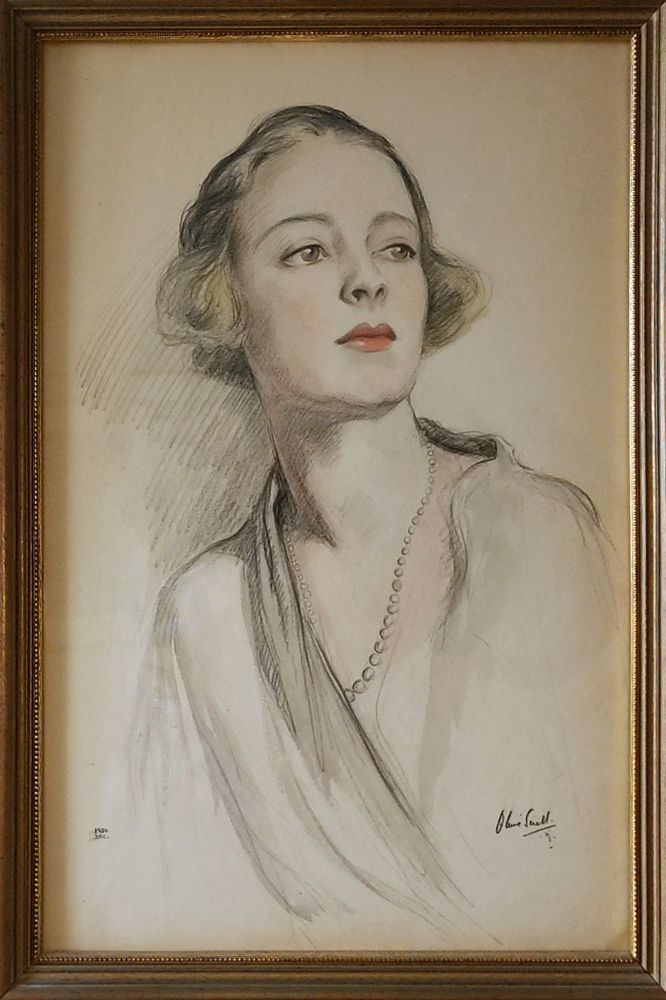
Maria Sergeyevna Kudasheva Princess · "Myra" · Mrs Norman Armour Born 7 April 1896, Saint PetersburgDied 15 September 1990, New York Her biography gives the birth year as 1895 or 1896. Married Norman Armour Sr (1887–1982).
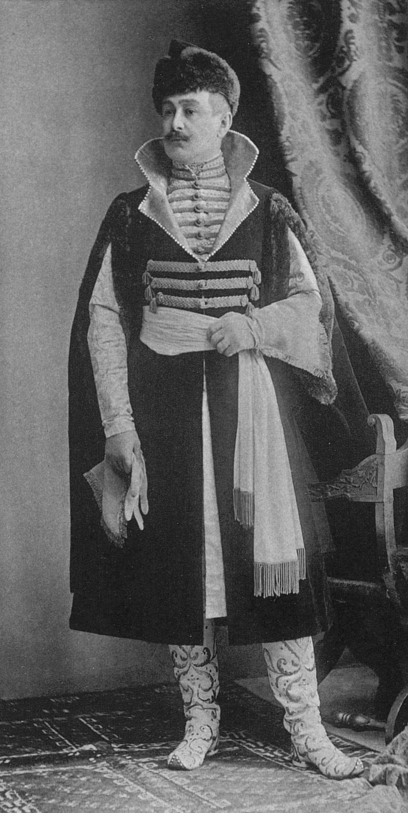
Sergei Vladimirovich Kudashev Prince Born 14 Dec 1863, KievDied 27/28 Feb 1933, Florence Married Vera in 1894.
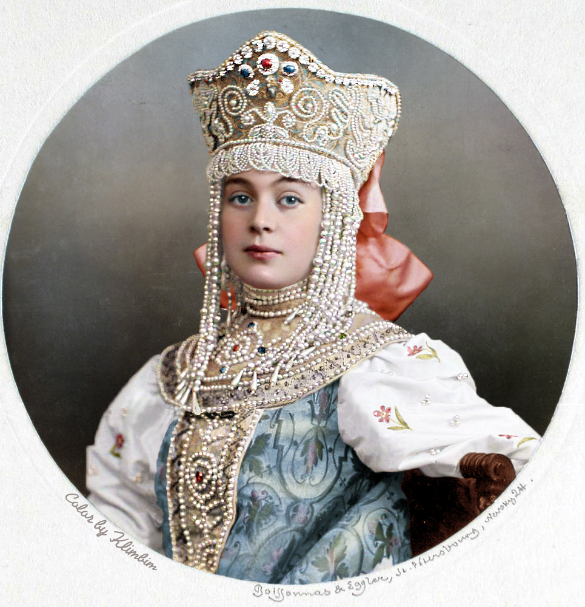
Vera Maximilianovna von Nieroth Countess · Princess Kudasheva by marriage Born 23 July 1874, Saint PetersburgDied 26 Jan 1920, Paris
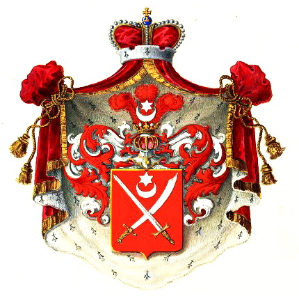
Vladimir Sergeyevich Kudashev Prince Born 22 or 23 March 1833, KievDied 2 Oct 1871, Kiev No portrait found; the family arms are shown.
Olga Nikolaevna Horvath
Also spelled Horvat
Born 1840, Kiev
Died 25 Oct 1907, Yalta
Maximilian Carl Benedict von Nieroth
Count
Born 30 Dec 1846, Saint PetersburgDied 25 Oct 1907, Yalta
Died 24 May 1914 Other sources give 1848 for his birth. Place of death is Kiev or Tsarskoye Selo.
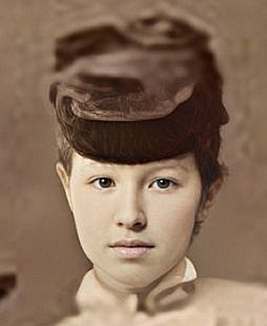
Anastasia Fyodorovna Trepova Countess von Nieroth by marriage Born 15 May 1849, KievDied 25 Sept 1940, Amblainville, France
 Sergei Danilovich Kudashev
Prince
Born 29 May 1795
Sergei Danilovich Kudashev
Prince
Born 29 May 1795Died 18 March 1862, Kiev
Mathilde de Choiseul-Gouffier
Countess
1806 – 1867
Nikolai Antonovich Horvat ?
Born 1797
From an unsourced family tree; not confirmed.
Olga's mother
Not yet known.
Evstafy Evstafyevich Nirod
Count · general of cavalry
German name: Gustaf Reinhold Johan von Nieroth. Dates not yet recorded.
Pauline Dorothea Elisabeth von Stenger
In Russian records: Paulina Fyodorovna Shtenger. Dates not yet recorded.
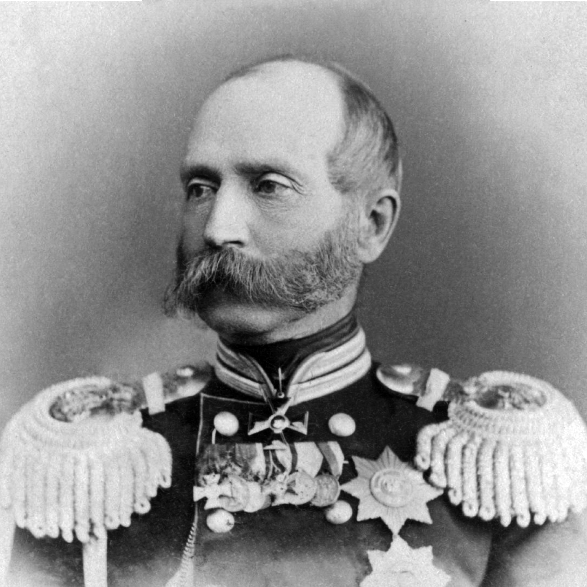
Fyodor Fyodorovich Trepov, senior General · Governor of Saint Petersburg Born 1809 or 1812Died 5 Dec 1889, Kiev 1809 is from his service record; Russian Wikipedia gives 1812.
Vera Vasilyevna Lukashevich
Born 1817 or 1821
Died 1866
Died 1866
Granny's own family
Her husband, their son, and me.
Her husband
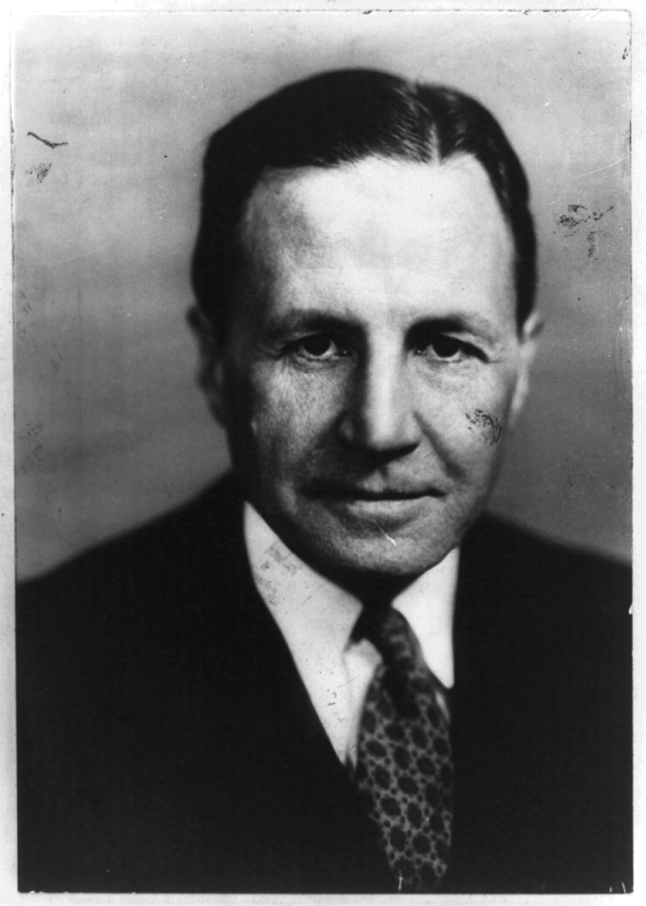
Norman Armour Sr The Honorable Born 14 Oct 1887, Brighton, EnglandDied 27 Sept 1982, New York
Her grandson
Norman Theo Armour III
Me
Born 1947
Brothers, uncles and cousins
Relatives on Granny's side who have pages here, each placed under the generation they belong to.
Her parents' generation
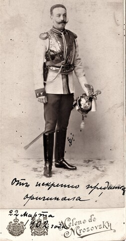
Vera's brother Fyodor Maximilianovich von Nieroth Count · major general Born 2 July 1871, Saint PetersburgDied 1952, France Another source gives 1 August for his birth. He died in Paris or Amblainville.
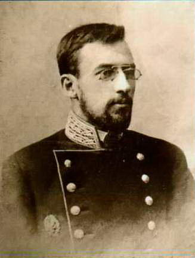
Sergei's first cousin Alexander Sergeyevich Kudashev Prince · engineer and aviation pioneer Born 21 Feb 1872, Saint PetersburgDied 1917 ? Sergei's first cousin Nikolai Alexandrovich Kudashev Prince · diplomat, last Imperial envoy to China Born 1868
Died 1925, Paris Another source gives 1921 for his death.
Her grandparents' generation
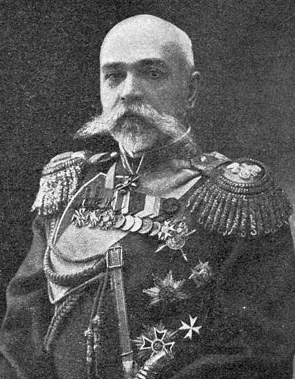
Anastasia's brother Fyodor Fyodorovich Trepov, junior General Born 25 May 1854Died 27 March 1938, Nice
 Anastasia's brother
Dmitri Feodorovich Trepov
General
Born 14 Dec 1855, Saint Petersburg
Anastasia's brother
Dmitri Feodorovich Trepov
General
Born 14 Dec 1855, Saint PetersburgDied 15 Sept 1906, Saint Petersburg His folder here is labelled 1850; his biography gives 1855.
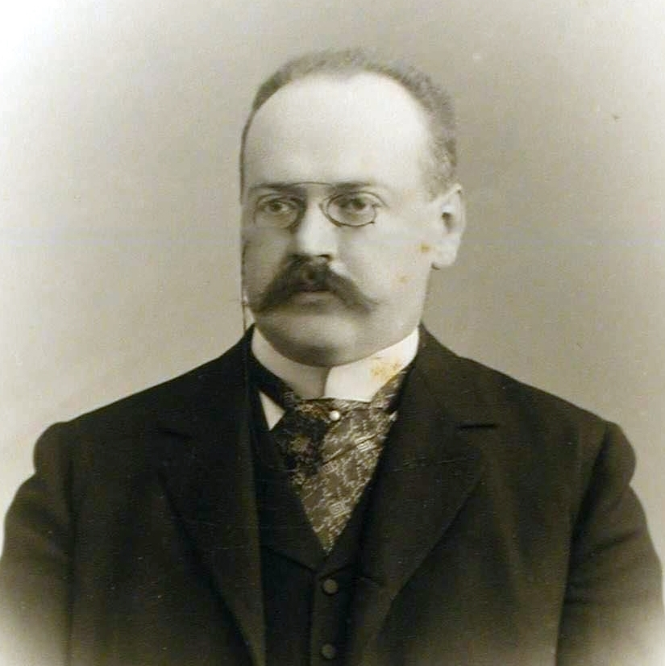
Anastasia's brother Alexander Fyodorovich Trepov Prime Minister of the Russian Empire Born 30 Sept 1862, KievDied 10 Nov 1928, Nice
 Anastasia's brother
Vladimir Fyodorovich Trepov
Born 18 Jan 1863
Anastasia's brother
Vladimir Fyodorovich Trepov
Born 18 Jan 1863Died August or September 1918, Kronstadt